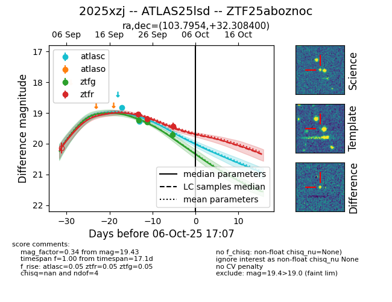
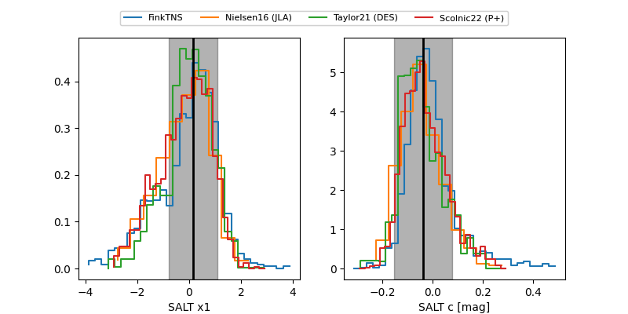

FINK: ZTF25aboznoc
Lasair: ZTF25aboznoc
ALeRCE: ZTF25aboznoc
TNS: 2025xzj
YSE: 2025xzj
ZTF25aboznoc (ztf,fink)
2025xzj (tns,yse)
ATLAS25lsd (atlas)
equatorial (ra, dec) = (103.7954,+32.30840)
galactic (l, b) = (183.8826,+14.83276)


last atlasc=19.28, ztfg=19.70, ztfr=19.43
2 atlasc, 3 ztfg, 3 ztfr detections